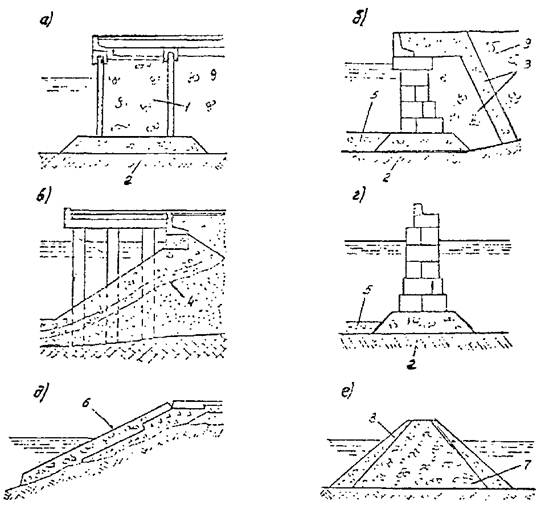

МИНИСТЕРСТВО МОРСКОГО ФЛОТА
Приложение к письму ММФ
от 03 апреля 1984 № 44
ВЕДОМСТВЕННЫЕ СТРОИТЕЛЬНЫЕ НОРМЫ
ПРИМЕНЕНИЕ ПРИРОДНОГО КАМНЯ
В МОРСКОМ ГИДРОТЕХНИЧЕСКОМ СТРОИТЕЛЬСТВЕ
ВСН 5-84
МИНМОРФЛОТ
Москва, 1984
|
Разработаны |
Государственным проектно-изыскательским и научно-исследовательским институтом морского транспорта «Союзморниипроект» |
|
Одесский филиал «Черноморниипроект» |
|
|
Зам. директора, к.т.н. Зеленский B.C. |
|
|
Зав. лабораторией, к.т.н. Бич Г.М. |
|
|
Отв. Исполнители: Бич Г.М., Вулихман И.С. |
|
|
Согласованы |
Госстроем СССР |
|
Письмо от 1 марта 1983 г. № ДП-1140-1 |
|
|
Внесены |
В/О «Морстройзагранпоставка» |
|
Зам. Председателя Понятовский В.В. |
|
Министерство Морского флота (Минморфлот) |
Ведомственные строительные нормы |
ВСН 5-84 |
|
Применение природного камня в морском гидротехническом строительстве |
Минморфлот |
|
|
Вводится впервые |
1.1. Настоящие нормы устанавливают требования к природному камню изверженных, метаморфических, осадочных пород и распространяется на проектирование и строительство морских гидротехнических сооружений (причальных, оградительных, берегоукрепительных и др.), располагаемых на берегах морей, лиманов, лагун или в устьях рек.
1.2. В случае экономической целесообразности применения природного камня, показатели которого не соответствуют требованиям настоящих норм, проектной организацией должны выполняться специальные исследования, обосновывающие техническую возможность его использования.
Примечание: Без специальных исследований допускается применять природный камень, характеристики которого соответствуют камню ранее используемому в гидротехнических сооружениях в аналогичных условиях с учетом положительного опыта строительства и эксплуатации не менее четверти нормального срока службы сооружения.
1.3. В морском гидротехническом строительстве применяется рваный камень, получаемый путем взрывания горных пород, либо окатанный камень (валуны).
1.4. Для морских гидротехнических сооружений применяются природные камни из следующих горных пород: осадочные (известняки, доломиты, песчаники, мергели); метаморфические (гнейсы, кварциты, кристаллические сланцы, мраморы и др.); изверженные (граниты, диориты, порфириты и др.).
|
Внесены В/О «Морстройзагранпоставка» |
Утверждены Министерством морского Флота 13.01.84 г. |
Срок введения в действие 01.07.84 г. |
1.5. Природный камень применяется при строительстве морских гидротехнических сооружений для выполнения парных перемычек, отсеков массивов-гигантов, ряжей, оболочек большего диаметра, устройства каменных постелей, разгружающих призм и контрфильтров, укрепления откосов, защиты дна от размыва и берегоукрепления, устройства оградительных и других сооружений из каменной наброски, образования территорий за причалами и т.д.
Основные элементы из камня, применяемые в конструкциях гидротехнических сооружениях, приведены на рисунке
2.1. При проектировании сооружений с применением природного камня необходимо определять следующие основные характеристики исходной горной породы:
· временное сопротивление сжатию породы в сухом и водонасыщенном состояниях;
· коэффициент размягчаемости;
· морозостойкость;
· плотность сухой породы.
Кроме того, необходимо определить:
· петрографический состав;
· водопоглощение;
· плотность частиц породы;
· содержание SО3
2.2. Временное сопротивление сжатию породы определяется в соответствии с требованиями ГОСТ 23845-79 «Сырье для производства щебня из естественного камня для строительных работ. Технические условия».
Коэффициент размягчаемости, морозостойкости, водопоглащение, петрографический состав, плотность сухой породы и плотность частиц породы определяются в соответствии с требованиями ГОСТ 8269-76 «Щебень из естественного камня, гравий и щебень из гравия для строительных работ. Методы испытаний».
Примечание: Для осадочных пород коэффициент размягчаемости определяется по стандартной методике, но при насыщении водой образцов до 6 суток.

Рис. Область применения природного камня в морском гидротехническом строительстве.
а - заполнение парных перемычек, отсеков массива-гиганта, оболочек большого диаметра, ряжа, ячеистых конструкций; б - разгружающая призма и контрфильтр, защитная отсыпь и каменная постель причальных сооружений гравитационного типа; в - укрепление откоса под свайным ростверком; г - каменная постель под оградительные сооружения, защитная отсыпь от размыва дна; д - берегоукрепление; е - отсыпь внутренних призм, защитное покрытие оградительного сооружения.
1 - камень-заполнитель; 2 - каменная постель; 3 - разгружающая призма и контрфильтр; 4 - укрепление откоса под свайным ростверком; 5 - защитная отсыпь от размыва дна; 6 - защитное покрытие; 7 - отсыпь внутренней призмы оградительного сооружения; 8 - защитные покрытия внешних оградительных сооружений; 9 - образование территории за причалом.
2.3. Камни и образующие их породы делятся
а) по временному сопротивлению сжатию в соответствии с ГОСТ 25100-82 «Грунты. Классификация»;
в) по плотности сложения в сухом состоянии на легкий - плотность сухого камня менее 1500 кг/м3, средний - 1500 до 1800 кг/м3 и тяжелый - более 1800 кг/м3.
2.4. Камень должен поступать на объект строительства сортированным в соответствии с требованиями проекта, в котором должны быть указаны: размер и форма камня, процентное содержание от объема партии по фракциям, допускаемые пределы по массе отдельных камней, минимальная марка камня по временному сопротивлению сжатию, плотность сложения, морозостойкость.
При соответствующем обосновании в проекте допускается применение несортированного камня.
Как правило, следует применять рваный камень с отношением наибольшего его размера к наименьшему для оградительных и берегоукрепительных сооружений не превышающем 3, для всех остальных - 4.
2.5. Камень не должен иметь прослоек размягчаемых пород, растворимых включений и рыхлых скоплений ракушечного материала, а также видимых расслоений и трещин.
2.6. Требования к камню по временному сопротивлению сжатию в зависимости от области его применения приведены в таблице.
|
Область применения камня |
Минимальная марка камня по временному сопротивлению сжатия для районов |
|
|
С высотой волны до 1 м |
С высотой волны более 1 м |
|
|
1 |
2 |
3 |
|
Заполнение шпунтовых парных перемычек, отсеков массивов-гигантов, оболочек большого диаметра, ряжей и ячеистых конструкций: |
||
|
временного типа |
25 |
- |
|
постоянного типа |
50 |
100 |
|
Разгружающие призмы и контрфильтры; защитные отсыпи у основания причальных сооружений |
35 |
100 |
|
Защитные отсыпи у оградительных сооружений и отсыпи внутренних призм оградительных сооружений |
- |
100 |
|
Укрепление откоса под свайными ростверками |
75 |
160 |
|
Береговые укрепления |
- |
150 |
|
Каменные постели: под причальными сооружениями |
200 |
300 |
|
под оградительными сооружениями |
- |
400 |
|
Защитные покрытия внешних оградительных и берегоукрепительных сооружений |
- |
400 |
|
То же в случае наличия в зоне волноприбоя гравия |
- |
800 и более |
|
Примечания: 1. Для каменных постелей оградительных сооружений I и II класса вертикального профиля, а также для всех видов гидросооружений в районах с тяжелыми климатическими условиями применяется камень марки не ниже 400. 2. В сооружениях, подверженных волновому воздействию в зоне выше критической глубины, должен применяться камень с плотностью сложения в сухом состоянии более 1800 кг/м3. 3. Элементы волн принимаются в соответствии с главой СНиП на нагрузки и воздействия на гидротехнические сооружения (волновые, ледовые и от судов). 4. Марка породы определяется по ГОСТ 23845-79 «Сырье для производства щебня из естественного камня для строительных работ. Технические условия». |
||
2.7. Требования к камню по морозостойкости в зависимости от климатических условий и зоны его расположения в сооружении устанавливаются как для бетонных и малоармированных конструкций и их элементов в соответствии с Указаниями по обеспечению долговечности бетонных и железобетонных конструкций морских гидротехнических сооружений (ВСН 6/118-74).
Примечание: Требования по морозостойкости не распространяются на элементы гидротехнических сооружений из камня, постоянно находящихся под водой.
Дополнительно к пункту 1.7 ВСН 6/118-74 к районам с тяжелыми условиями службы относится все побережье Арктики.
2.8. Морозостойкость камня оценивается маркой, соответствующей числу циклов попеременного замораживания и оттаивания в соответствии с требованиями ГОСТ 23845-79 «Сырье для производства щебня из естественного камня для строительных работ. Технические условия».
Для предварительной оценки морозостойкости камня разрешается его испытывать в растворе сернокислого натрия.
Для камня практически не изменившего показатели свойств, что устанавливает проектная организация, при применении его в данном районе или в аналогичных условиях эксплуатации не менее четверти нормативного срока службы сооружения, испытания на морозостойкость допускается не производить.
2.9. Коэффициент размягчаемости для осадочных пород должен быть не менее 0,75; для изверженных и метаморфических - не менее 0,9.
Примечания:
1. Большее содержание глинистых и песчаных грунтов почвы, слабовыветрелых, выветрелых и сильновыветрелых пород допускается при соответствующем обосновании.
2. Содержание глины определяется по ГОСТ 8269-76 «Щебень из естественного камня, гравий и щебень из гравия для строительных работ. Методы испытаний».
2.11. Водопоглощение камня по массе допускается не более 6 % - для полускальных грунтов и малопрочных пород, не более 2 % - для пород средней прочности и прочных, не более 0,5 % - для очень прочных пород.
Примечание. При соответствующем обосновании возможно применение пород с большим водопоглощением.
2.12. Содержание в камне сернокислых и сернистых соединений в пересчете на SO3 допускается не более 1 % по массе.
2.13. Природный камень, предназначенный для использования в агрессивной среде, должен применяться в соответствии с требованиями главы СНиП по защите строительных конструкций от коррозии.
3.1. Объем партии камня устанавливается по соглашению сторон: заказчика и предприятия (карьера) - изготовителя.
Партией считается количество камня, отгружаемого одному потребителю в одном железнодорожном составе или в одной барже. При отгрузке автомобильным транспортом партией считается количество камня, отгружаемого одному потребителю в течение одних суток.
3.2. Каждая партия камня по результатам испытаний может быть отнесена только к одной марке по временному сопротивлению сжатию, по морозостойкости и другим показателям.
3.3. Определение количества поставляемого камня производят по объекту или массе в состоянии естественной влажности. Обмер камня производят в вагонах, судах и автомобилях. Взвешивание камня производят на железнодорожных или автомобильных весах. Массу камня, отгружаемого в судах, определяют по осадке судна.
Перерасчет количества камня из весовых единиц в объемные производят по значениям плотности сложения камня в насыпи, определяемой в состоянии естественной влажности.
Определение физико-механических свойств камня производится на каждые 30 тыс. м3 объема горной породы и в каждом случае изменения свойств разрабатываемой породы.
Срок хранения на приобъектных складах камня, предназначенного для укладки под воду, с маркой по морозостойкости Мрз50 и ниже устанавливается соглашением сторон заказчика и предприятия (карьера) - изготовителя, но не должен быть более одного года.
Технологический процесс производства камня на предприятии (карьере) - изготовителе должен обеспечивать стабильное получение показателей качества камня, соответствующих требованиям настоящих норм.
3.4. Предприятие (карьер) - изготовитель обязано сопровождать каждую партию поставляемого камня паспортом, в котором указывается:
· наименование и адрес предприятия (карьера) - изготовителя;
· номер и дата составления паспорта;
· календарные сроки заготовки партии;
· порода и номер свиты забоя карьера;
· наименование и адрес потребителя;
· номер партии и количество камня;
· номера вагонов или номер судна и номера накладных;
· процентное содержание от объема партии по фракциям;
· срок хранения на приобъектных складах для полускальных и малопрочных пород;
· содержание кусков размером менее наименьшей крупности и более наибольшей крупности, установленных соглашением сторон;
· плотность сухой породы;
· марка по временному сопротивлению сжатию;
· марка по морозостойкости;
· коэффициент размягчаемости;
· специальные требования, установленные соглашением сторон.
Марка камня по временному сопротивлению сжатию и морозостойкости, а также коэффициент размягчаемости и плотность сухой породы даются со ссылкой на дату и номер документа испытания.
3.5. Предприятие (карьер) - изготовитель должен иметь и сообщать потребителю по его требованию следующие характеристики исходной горной породы, установленные при геологической разведке:
· петрографический состав;
· описание структуры и текстуры, в том числе трещиноватости;
· показателя физико-механических свойств.
К показателям физико-механических свойств породы относятся:
· плотность частиц породы;
· плотность сухой породы;
· плотность сложения камня в насыпи;
· пористость;
· временное сопротивление сжатию в сухом и насыщенном состояниях;
· содержание примесей согласно требованиям п. 2.10 настоящих норм;
· морозостойкость;
· содержание SO3.
3.6. Камень различных физико-механических свойств должен храниться раздельно в условиях, предохраняющих его от засорения и загрязнения.
3.7. Камень, выпускаемый предприятием (карьером) - изготовителем, должен быть принят техническим контролем этого предприятия.
3.8. Приемка камня потребителем производится по паспорту и визуальным осмотром. Возможна выборочная контрольная проверка соответствия камня техническим требованиям.
СОДЕРЖАНИЕ